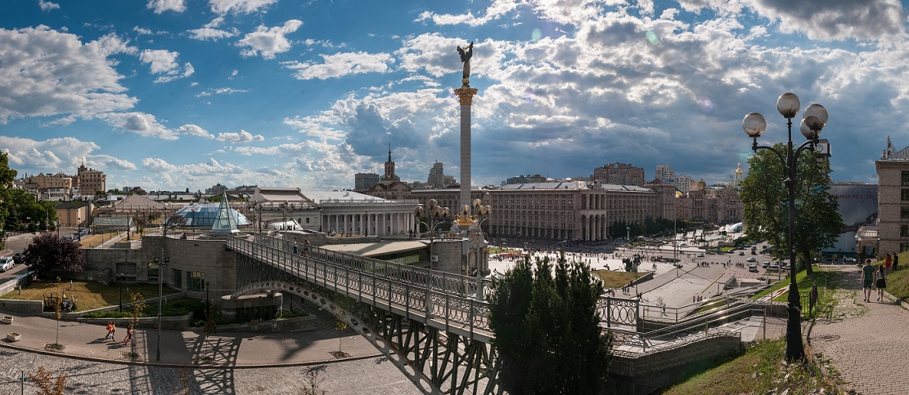

Was born on 9 January 1999 in Chernyakhiv.
Chernyakhiv Secondary School No. 3
Taras Shevchenko National University of Kyiv
National Technical
University of Ukraine «Igor Sikorsky
Kyiv Polytechnic Institute» Faculty of Informatics and Computer Technique (FIOT)
Kyiv is one of the most beautiful cities of the world that picturesquely spreads on the Dnipro river hills. As others old cities Kyiv has no exact date of foundation. According to the legend, Kyiv was founded more than 1,500 years ago by three brothers Kyi, Schek, Khoryv and their sister Lybid. The city was named after the oldest brother Kyi. In the 9th century Kyiv became the capital of the Ancient Rus. The territory of this independent state stretched out from the Baltic Sea in the North to the Black Sea in the South and from Volga River in the East to the Carpathians Mountains in the West. Kyiv is often referred as "the mother of all cities" and as a cradle of Slavonic civilization.
